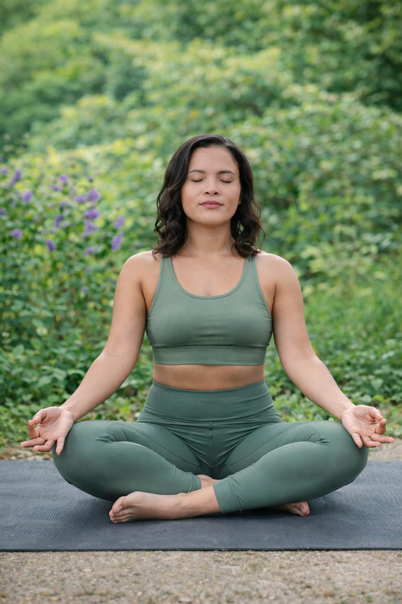
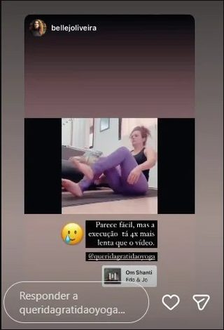
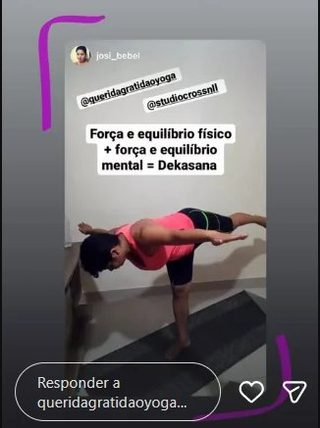

Você acabou de garantir as aulas gravadas. Agora você pode ter também as aulas ao vivo do Yogaflix, com correção de postura em tempo real, por menos da metade do preço.

As aulas gravadas são ótimas para praticar no seu horário. Mas talvez você já tenha sentido que, praticando sozinha, fica a dúvida: "será que estou fazendo certo?"
Aulas ao vivo 2 vezes por semana, às terças e quintas, às 21h, pelo Google Meet. Aulas de 50 minutos com respiração, posturas e relaxamento.
Todas as aulas ficam gravadas. Não conseguiu ir ao vivo? Assiste depois, no seu tempo.
Biblioteca com mais de 200 aulas para praticar nos outros dias da semana.
Correção de postura em tempo real e posturas adaptadas ao seu corpo e ao seu nível.
Grupo da turma e suporte para tirar dúvidas e não praticar sozinha.


Pagando mês a mês, seriam R$ 600 (3 x R$ 200)
R$ 297
pagamento único, ou parcelado no cartão
Você economiza R$ 303 e paga menos de R$ 100 por mês
Sim! Quero praticar ao vivo com a AmandaCompra segura pela Hotmart
Experimente as aulas ao vivo. Se sentir que não é para você, devolvemos 100% do valor dentro de 7 dias, sem burocracia.
Não. As posturas são adaptadas ao nível de cada pessoa da turma, e eu acompanho você de perto.
Todas as aulas ao vivo ficam gravadas, e você ainda tem a biblioteca com mais de 200 aulas.
Não. O seu acesso ao Acessível Yoga continua normal. As aulas ao vivo são um complemento.